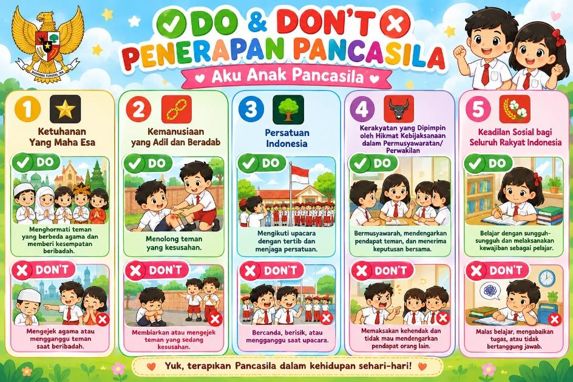

| Hari / Tanggal | Mata Pelajaran | Waktu | Fokus Tugas & Proyek Siswa |
|---|---|---|---|
| Selasa, 22 Sept 2026 | 🦅 Pancasila (Sesi 1) | 2 JP (90 Menit) |
• Menempel gambar Burung Garuda di kertas HVS. • Memasang 5 simbol sila pada perisai Garuda. • Menulis semboyan "Bhinneka Tunggal Ika" pada pita. • Mewarnai Burung Garuda & simbol sesuai warna aslinya. |
| Rabu, 23 Sept 2026 | 🦅 Pancasila (Sesi 2) | 1 Pertemuan | • Menggunting & menempel gambar Do & Don't (Penerapan Sila 1 s.d. 5) di sekitar Garuda Pancasila. |
| 🕌 PABP Islam | 09.00 - 10.00 (60 Mnt) |
• Proyek: "Show Your Caring" (Unit 3: Kasih Sayang Kepada Sesama). • Membaca & memahami 4 Sikap: Saling Menyayangi, Sikap Empati, Tutur Kata Lembut, dan Sikap Jujur. • Mengklasifikasikan 12 potongan gambar ke 4 kolom sikap & menempelkannya. • Menuliskan pengalaman nyata & menceritakannya ke Miss & Mister. • Perlengkapan: Wajib membawa Textbook PABP, gunting, lem, & alat warna. |
|
| 🪪 Humaniora | 60 Menit |
• Membuat ID Card (Kartu Identitas Diri) di kertas tebal. • Menempel pasfoto, menulis biodata lengkap & tanda tangan. • Mempresentasikan ID Card secara lisan. |
|
| Kamis, 24 Sept 2026 | 🌬️ Science | 09.00 - 11.00 (2 Pertemuan) |
• Unit 3: Air (Udara & Angin). • Menjawab pertanyaan teacher tentang fungsi udara. • Membuat infografis sederhana "I Can Make My Classroom Cool". • Membuat video presentasi singkat. |
| Senin, 28 Sept 2026 | 🦅 Pancasila (Sesi 3) | 1 Pertemuan | • Presentasi Mading Pancasila di depan kelas/guru. |
Gambar ini yang akan digunting dan ditempel Laskar di sekitar burung Garuda pada hari Rabu:

"Assalamu'alaikum Miss, Mister, dan teman-teman semuanya. Nama saya Laskar dari kelas 2.
Ini adalah Mading Pancasila buatan saya.
Di tengah ada Burung Garuda dengan 5 simbol sila:
1. Sila pertama Bintang: Contoh perbuatannya adalah menghormati teman yang sedang beribadah.
2. Sila kedua Rantai: Contoh perbuatannya adalah menolong teman yang terjatuh.
3. Sila ketiga Pohon Beringin: Contoh perbuatannya adalah tertib saat upacara bendera.
4. Sila keempat Kepala Banteng: Contoh perbuatannya adalah bermusyawarah memilih ketua kelas.
5. Sila kelima Padi dan Kapas: Contoh perbuatannya adalah rajin belajar dan tidak malas.
Di cengkeraman kaki Garuda ada semboyan Bhinneka Tunggal Ika, artinya berbeda-beda tetapi tetap satu jua. Terima kasih!"
"Hello Miss, Mister, and friends! My full name is Laskar Al Kautsar, you can call me Laskar.
I was born in Malang on December 8, 2018, and I am 7 years old.
I study at SD MISS Malang in Grade 2.
I live in Griya Salam Madani No. 11 Cemorokandang, Malang with my beloved parents.
This is my Identity Card. Thank you!"
Menyayangi teman, keluarga, hewan, & tanaman. Berbagi bekal cemilan saat jam istirahat dan menyiram bunga.
Peka kesedihan orang lain. Menolong teman yang tersandung jatuh di lapangan, menghibur teman sedih, & menjenguk yang sakit.
Berbicara sopan, ramah, tidak berteriak. Selalu membiasakan 4 kata ajaib: Tolong, Maaf, Terima Kasih, & Permisi.
Berkata benar apa adanya. Mengembalikan pensil temuan ke guru, berani mengakui kesalahan, & tidak menyontek.
"Assalamu'alaikum warahmatullahi wabarakatuh.
Good morning Miss, Mister, dan teman-teman semuanya!
Nama saya Laskar, dari kelas Grade 2 SD MISS Malang.
Hari ini saya mempersembahkan proyek PABP berjudul 'Show Your Caring'.
Dalam Islam, ada 4 sikap terpuji yang saya terapkan: Pertama, Saling Menyayangi dengan berbagi bekal. Kedua, Sikap Empati dengan menolong teman yang jatuh. Ketiga, Tutur Kata Lembut dengan selalu mengucap tolong, maaf, dan terima kasih. Keempat, Sikap Jujur dengan mengembalikan barang temuan kepada guru.
Mari kita selalu saling menyayangi sesama ciptaan Allah SWT. Terima kasih Miss, Mister, dan teman-teman!
Wassalamu'alaikum warahmatullahi wabarakatuh."
Tersedia di halaman khusus PABP lengkap dengan rubrik penilaian resmi guru (*Content & accuracy, Effort & neatness, Following directions, Cooperation, Problem solving*).
🖨️ Buka & Cetak Lembar Proyek PABP (A4)
• Air (Udara): Gas yang tidak terlihat di sekitar kita dan dibutuhkan oleh semua makhluk hidup untuk bernapas.
• Wind (Angin): Udara yang bergerak (Moving air).
• Sinar matahari terik masuk lewat kaca jendela.
• Panas tubuh dari banyaknya siswa di dalam kelas.
• Pintu dan jendela tertutup sehingga udara tidak mengalir.
4 Usaha Sederhana yang Dapat Kita Lakukan Agar Udara Kelas Terasa Sejuk dan Segar:
Membuka jendela kelas agar terjadi sirkulasi udara segar (ventilasi).
Menyalakan kipas angin atau AC untuk menggerakkan udara dingin.
Menutup gorden/tirai jendela saat sinar matahari siang menyengat.
Meletakkan tanaman pot hijau untuk menghasilkan oksigen segar.
Opening:
"Hello Miss, Mister, and friends! My name is Laskar from Grade 2."
(Halo Miss, Mister, dan teman-teman! Nama saya Laskar dari kelas 2.)
Air & Wind:
"Air is around us. Wind is moving air. We need air to breathe."
(Udara ada di sekitar kita. Angin adalah udara yang bergerak. Kita butuh udara untuk bernapas.)
How to Make Classroom Cool:
"In the afternoon, our classroom can be hot. I can make my classroom cool by:
1. Opening the windows for fresh air.
2. Turning on the fan.
3. Closing the curtains from hot sunlight."
(Di siang hari kelasku bisa panas. Aku bisa membuatnya sejuk dengan: 1. Membuka jendela, 2. Menyalakan kipas angin, 3. Menutup tirai dari panas matahari.)
Closing:
"Now our classroom feels fresh and cool! Thank you!"
(Sekarang kelas kita terasa segar dan sejuk! Terima kasih!)